Go to this link and signup
Enter a team name and create the team. Below is the settings that I used:
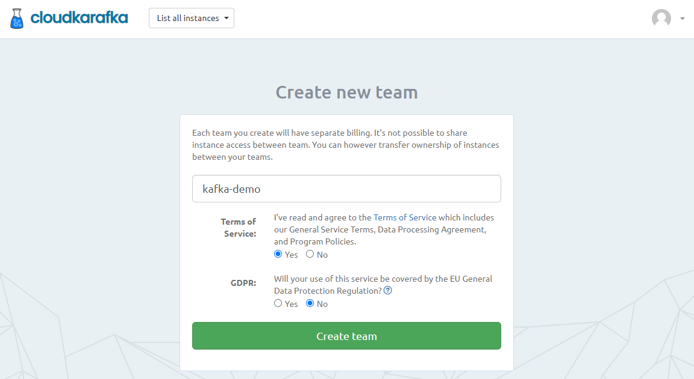
Click on Create New Instance button and fill-out the details. For instance, I filled the below ones in my case:
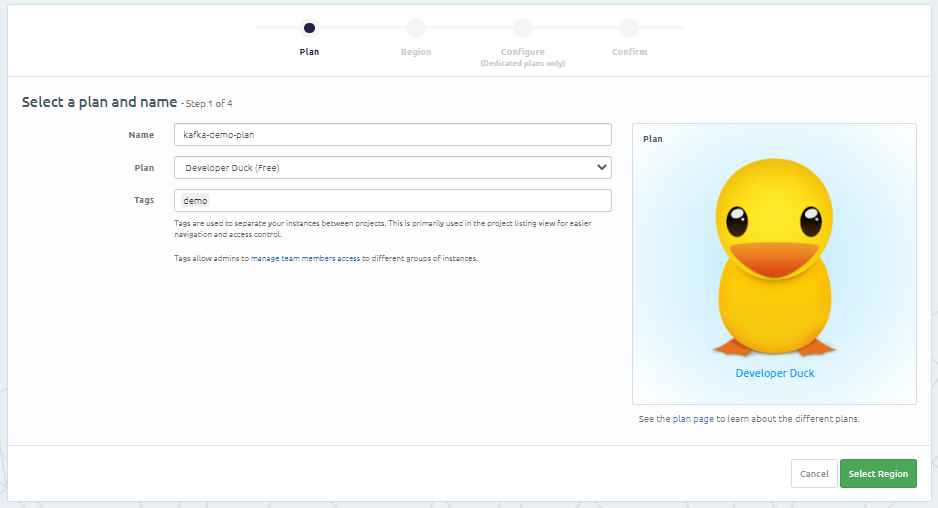
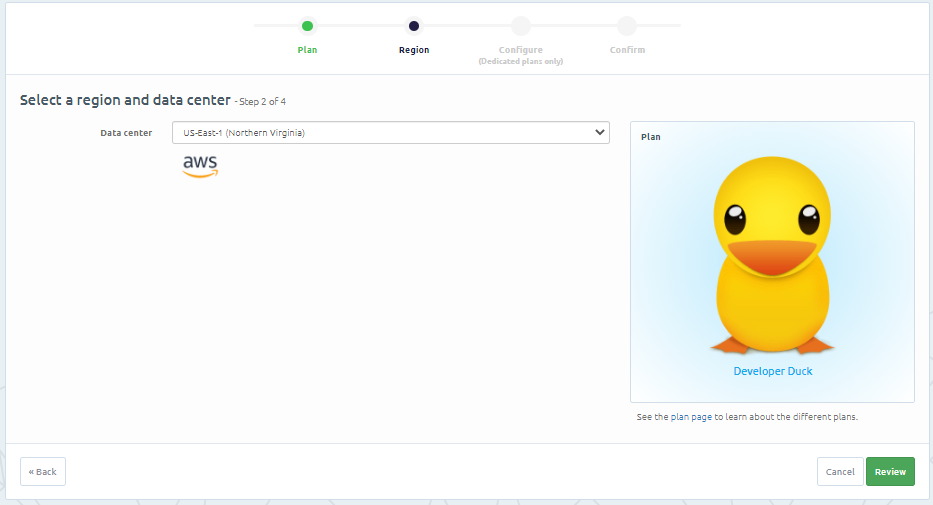
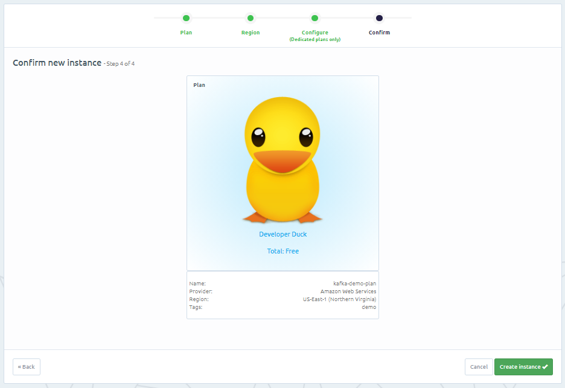
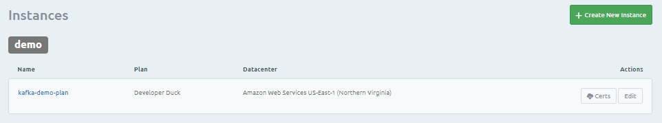
Click on the kafka instance and you will see something like this:
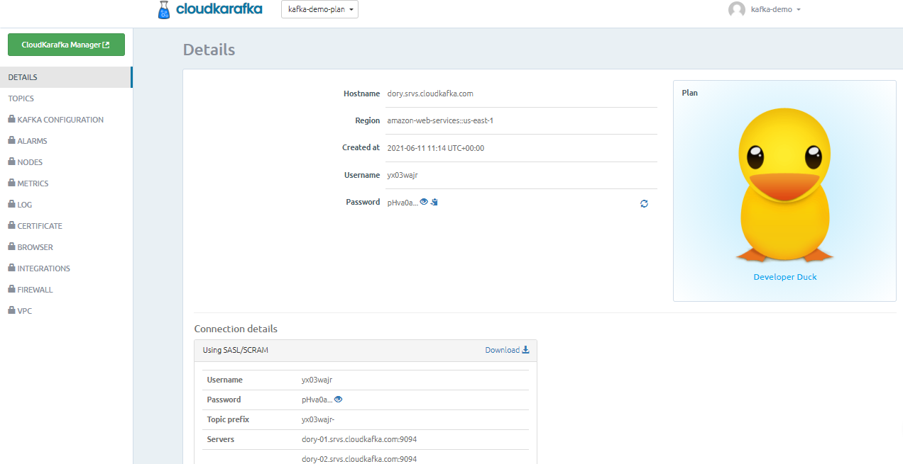
We will be needing these details to configure Kafka in our notebook.
For now, let's create a topic first. Click on topic tab, from left-side navigation pane.
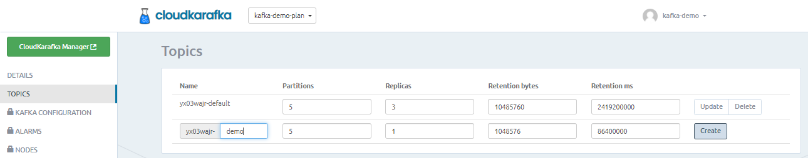
You can use default one also, but for our use case, we are creating a new topic named "-".
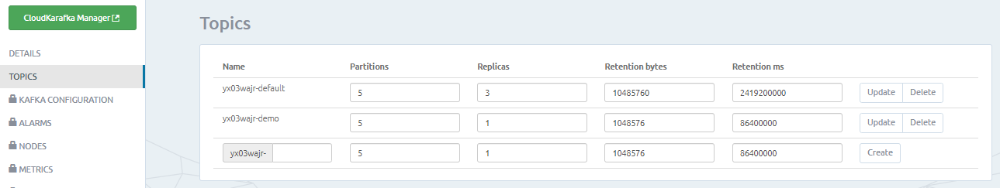
Keep this instance detail page open or note down the details safely. We will be needing these details later.
Go to this link and sign-up. I used Sign up with Google option.
I got this as my welcome page:
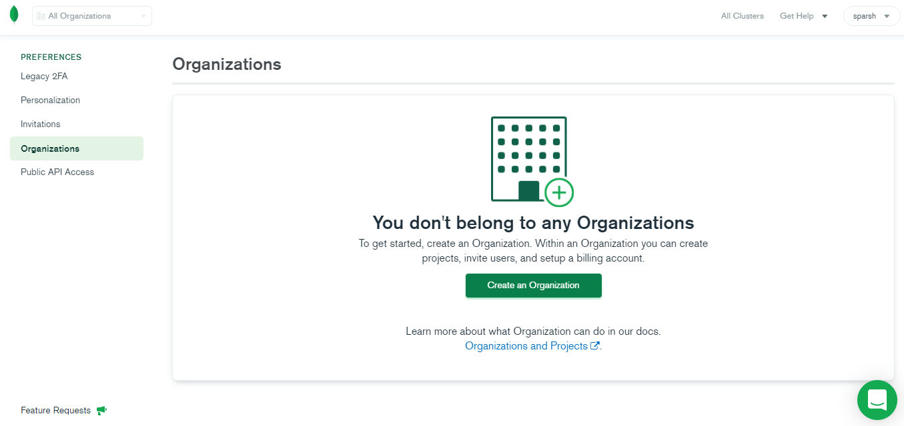
Click on Create an Organization. Give it a name and click on Next:
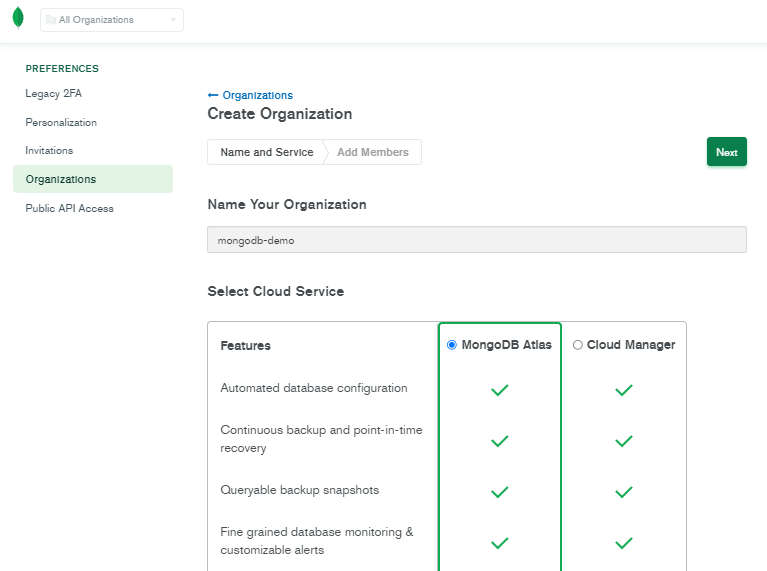
Click on Create Organization:
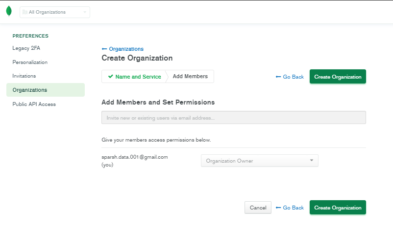
Click on Create New Project, name it and click on Next:
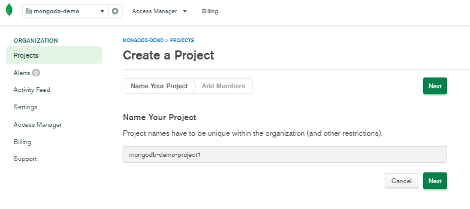
Then, click on Create Project:
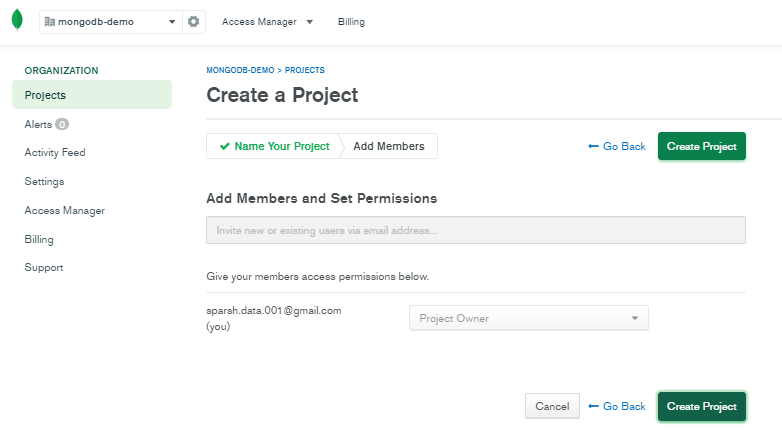
Click on Build a Cluster:
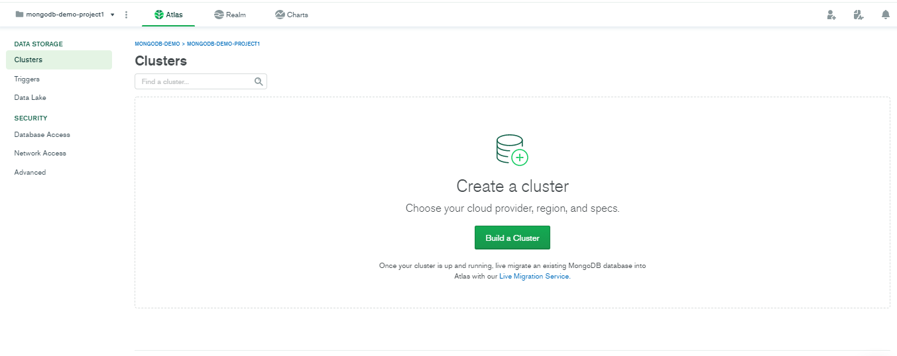
Choose the free version:
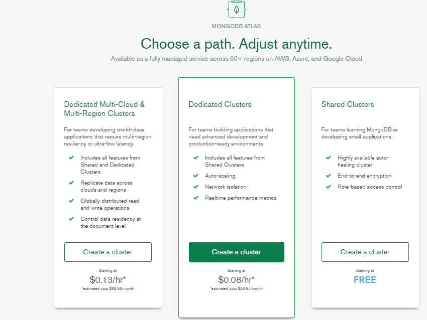
Click on Create Cluster:
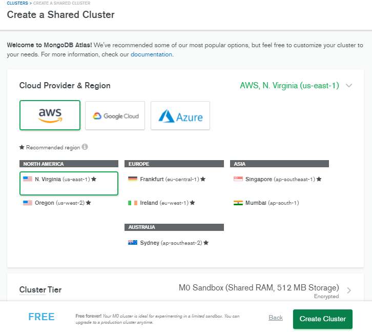
Click on CONNECT button and select Connect from anywhere. A default IP 0.0.0.0 will come and click Ok.
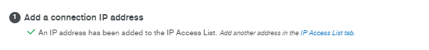
Click on Connect and enter username and password:
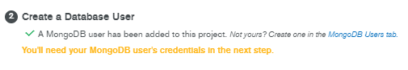
Also get the connection string that we will use in our python notebook code to connnect:
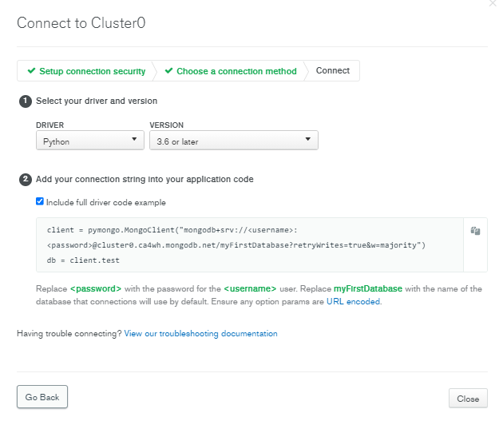
Click on COLLECTIONS, the third button on center-left of this image:
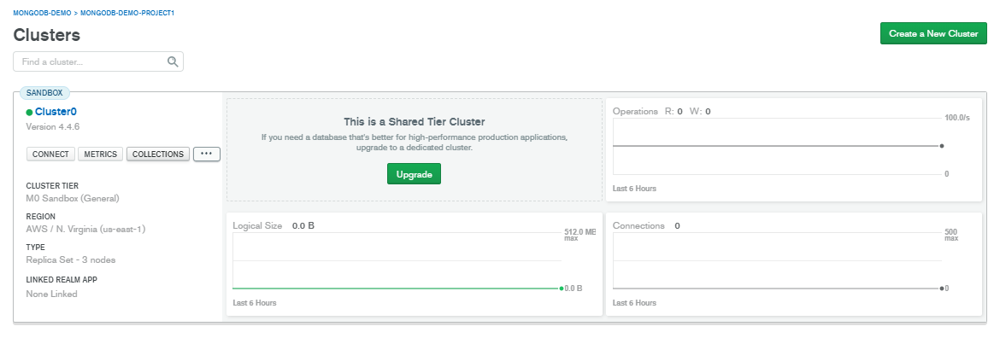
Click on Add My Own Data and Create the Database:
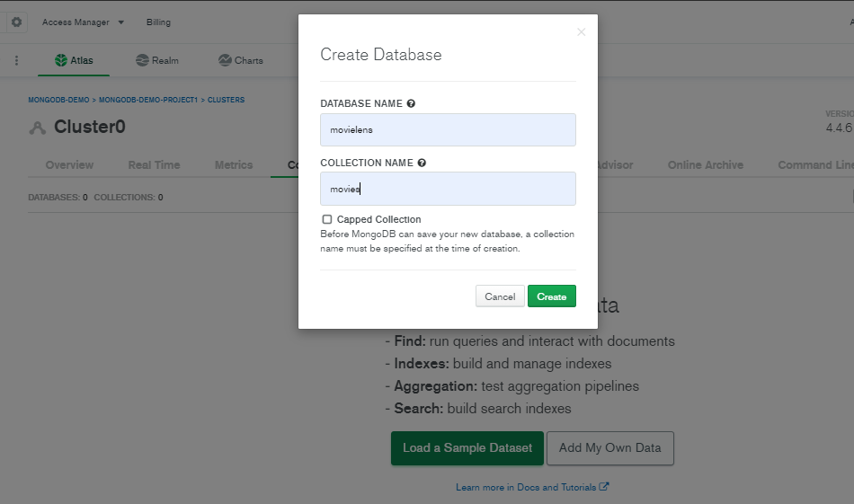
Open this (mirror) jupyter notebook in any of your favorite editor. I used Google Colab.
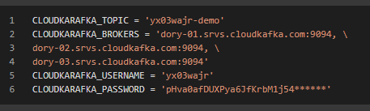
We need to get these 4 parameters from CloudKerafka account that we created.
Once configured, we are ready to stream events to the topic server. There are 2 ways to run the stream: We can either send a fixed number of events or run a script endlessly that will ask for the message to be sent via terminal.
In practical scenarios, we inject a javascript into the user's browser session that sends the event to a listening server and that server sends those messages to the kafka producer.
We sent 5 messages to the topic server which would look like this:
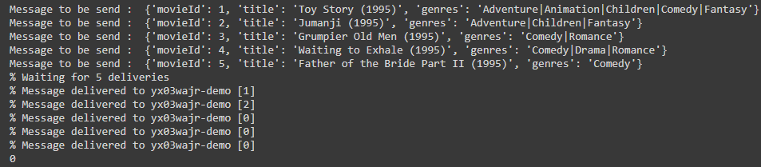
The cloudkarafka manager dashboard would look like this:
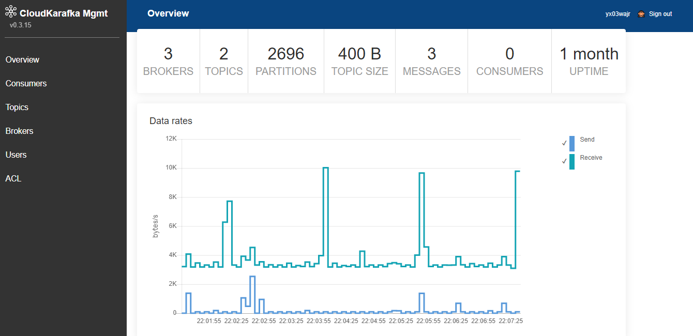
%%writefile producer.py
import sys
import os
from confluent_kafka import Producer
CLOUDKARAFKA_TOPIC = 'yx03wajr-demo'
CLOUDKARAFKA_BROKERS = 'dory-01.srvs.cloudkafka.com:9094, \
dory-02.srvs.cloudkafka.com:9094, \
dory-03.srvs.cloudkafka.com:9094'
CLOUDKARAFKA_USERNAME = 'yx03wajr'
CLOUDKARAFKA_PASSWORD = 'pHva0afDUXPya6JfKrbM1******'
if __name__ == '__main__':
topic = CLOUDKARAFKA_TOPIC.split(",")[0]
# Consumer configuration
# See https://github.com/edenhill/librdkafka/blob/master/CONFIGURATION.md
conf = {
'bootstrap.servers': CLOUDKARAFKA_BROKERS,
'session.timeout.ms': 6000,
'default.topic.config': {'auto.offset.reset': 'smallest'},
'security.protocol': 'SASL_SSL',
'sasl.mechanisms': 'SCRAM-SHA-256',
'sasl.username': CLOUDKARAFKA_USERNAME,
'sasl.password': CLOUDKARAFKA_PASSWORD
}
p = Producer(**conf)
def delivery_callback(err, msg):
if err:
sys.stderr.write('%% Message failed delivery: %s\n' % err)
else:
sys.stderr.write('%% Message delivered to %s [%d]\n' %
(msg.topic(), msg.partition()))
for line in sys.stdin:
try:
p.produce(topic, line.rstrip(), callback=delivery_callback)
except BufferError as e:
sys.stderr.write('%% Local producer queue is full (%d messages awaiting delivery): try again\n' %
len(p))
p.poll(0)
sys.stderr.write('%% Waiting for %d deliveries\n' % len(p))
p.flush()
Open this (mirror) jupyter notebook in any of your favorite editor. I used Google Colab.
Configuration process is same as previous step.
Once configured, the received messages would look like this:
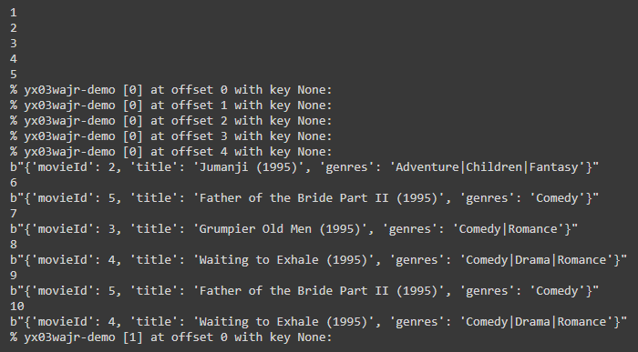
We are able to successfully receive the messages in real-time.
Now, let's store these messages in a persistent database. We are using MongoDB for that.
Enter these 4 parameters that we received during mongoDB configuration:
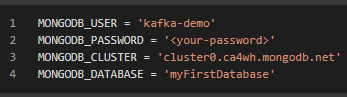
%%writefile consumer.py
import sys
import os
from confluent_kafka import Consumer, KafkaException, KafkaError
import pymongo
CLOUDKARAFKA_TOPIC = 'yx03wajr-demo'
CLOUDKARAFKA_BROKERS = 'dory-01.srvs.cloudkafka.com:9094, \
dory-02.srvs.cloudkafka.com:9094, \
dory-03.srvs.cloudkafka.com:9094'
CLOUDKARAFKA_USERNAME = 'yx03wajr'
CLOUDKARAFKA_PASSWORD = 'pHva0afDUXPya6JfKrbM1j549G*****'
MONGODB_USER = 'kafka-demo'
MONGODB_PASSWORD = '<your-pass>'
MONGODB_CLUSTER = 'cluster0.ca4wh.mongodb.net'
MONGODB_DATABASE = 'movielens'
mongo_uri = f"mongodb+srv://{MONGODB_USER}:{MONGODB_PASSWORD}@{MONGODB_CLUSTER}/{MONGODB_DATABASE}?retryWrites=true&w=majority"
client = pymongo.MongoClient(mongo_uri)
mydb = client[MONGODB_DATABASE]
movies = mydb.movies
if __name__ == '__main__':
topics = CLOUDKARAFKA_TOPIC.split(",")
# Consumer configuration
# See https://github.com/edenhill/librdkafka/blob/master/CONFIGURATION.md
conf = {
'bootstrap.servers': CLOUDKARAFKA_BROKERS,
'group.id': "%s-consumer" % CLOUDKARAFKA_USERNAME,
'session.timeout.ms': 6000,
'default.topic.config': {'auto.offset.reset': 'smallest'},
'security.protocol': 'SASL_SSL',
'sasl.mechanisms': 'SCRAM-SHA-256',
'sasl.username': CLOUDKARAFKA_USERNAME,
'sasl.password': CLOUDKARAFKA_PASSWORD
}
c = Consumer(**conf)
c.subscribe(topics)
try:
while True:
msg = c.poll(timeout=1.0)
if msg is None:
continue
if msg.error():
# Error or event
if msg.error().code() == KafkaError._PARTITION_EOF:
# End of partition event
sys.stderr.write('%% %s [%d] reached end at offset %d\n' %
(msg.topic(), msg.partition(), msg.offset()))
elif msg.error():
# Error
raise KafkaException(msg.error())
else:
# Proper message
sys.stderr.write('%% %s [%d] at offset %d with key %s:\n' %
(msg.topic(), msg.partition(), msg.offset(),
str(msg.key())))
print(msg.value())
try:
movies.insert_one(eval(msg.value().decode('utf-8')))
except:
movies.insert_one({"err_flag":True, "msg":str(msg.value())})
except KeyboardInterrupt:
sys.stderr.write('%% Aborted by user\n')
# Close down consumer to commit final offsets.
c.close()
Open this (mirror) jupyter notebook in any of your favorite editor. I used Google Colab.
On every message that we are receiving from Kafka, we are storing it in MongoDB. A more efficient process is to store in batch. Here is the side-by-side notebook snapshot of the entire process. Left is the producer who is sending the JSON to Kafka broker, the center is the consumer who is subscribed to the topic and receiving the messages in real-time. And on the right side, we have a MongoDB listener which is connected to MongoDB, listening to the events and converting them into a pandas data frame.
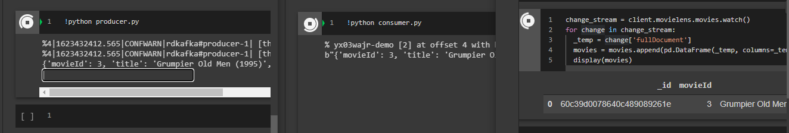
Congratulations! You have successfully completed the first step in building a real-time recommendation system.